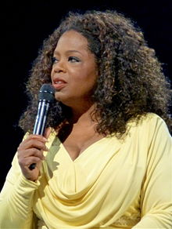

Oprah Gail Winfrey (born Orpah Gail Winfrey; January 29, 1954) is an American
media proprietor, talk show host, actress, producer, and philanthropist. She is
best known for her talk show The Oprah Winfrey Show, which was the highest-rated
television program of its kind in history and was nationally syndicated from
1986 to 2011.
Dubbed the "Queen of All Media", she has been ranked the richest
African-American of the 20th century the greatest black philanthropist in
American history, and is currently North America's first and only
multi-billionaire black person.
Several assessments rank her as the most
influential woman in the world.In 2013, she was awarded the Presidential Medal
of Freedom by President Barack Obama and honorary doctorate degrees from Duke
and Harvard.
Winfrey was born into poverty in rural Mississippi to a teenage single mother
and later raised in an inner-city Milwaukee neighborhood.
She has stated that
she was molested during her childhood and early teens and became pregnant at 14;
her son died in infancy. Sent to live with the man she calls her father, a
barber in Tennessee, Winfrey landed a job in radio while still in high school
and began co-anchoring the local evening news at the age of 19.
Her emotional
ad-lib delivery eventually got her transferred to the daytime-talk-show arena,
and after boosting a third-rated local Chicago talk show to first place,she
launched her own production company and became internationally syndicated.
Credited with creating a more intimate confessional form of media communication,
she is thought to have popularized and revolutionized the tabloid talk show
genre pioneered by Phil Donahue, which a Yale study says broke 20th-century
taboos and allowed LGBT people to enter the mainstream. By the mid-1990s, she
had reinvented her show with a focus on literature, self-improvement, and
spirituality.
Though criticized for unleashing a confession culture, promoting
controversial self-help ideas, and an emotion-centered approach, she is often
praised for overcoming adversity to become a benefactor to others. From 2006 to
2008, Oprah Winfrey's endorsement of Barack Obama, by one estimate, delivered
over a million votes in the close 2008 Democratic primary race